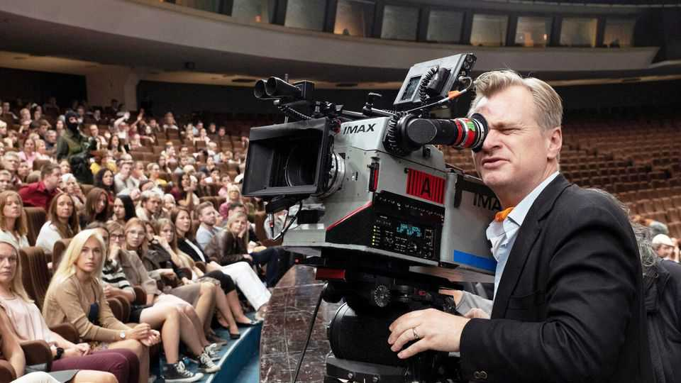
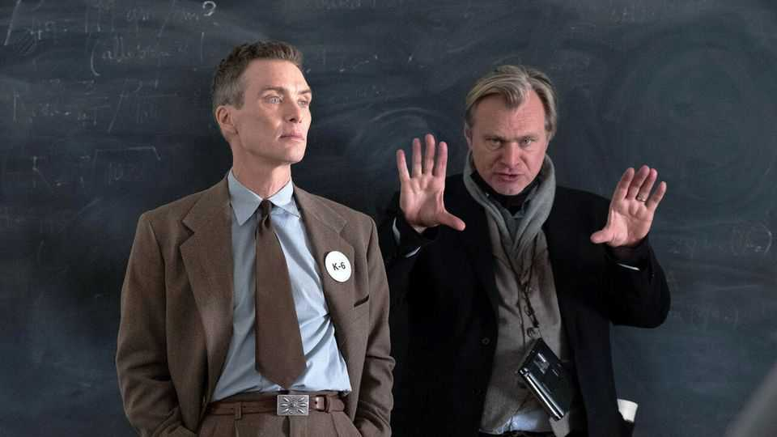

Why Sir Christopher Nolan inspires such devotion—and contempt
His films are ambitious and technically brilliant, but often emotionally detached
July 16th 2026

THE SEVEN most dangerous words anyone can say to a film aficionado are: “What do you think of Christopher Nolan?” The question will almost certainly elicit one of two reactions: a long, fevered disquisition on the masterful craftsmanship of his 12 feature films (now 13, with the release of “The Odyssey”)—or eye-rolling contempt. Almost nobody will shrug and say, “Eh, he’s fine.”
Perhaps that is unsurprising: ambitious artists tend to provoke strong reactions, and Sir Christopher Nolan is nothing if not ambitious. He is the seventh-highest-grossing film director ever, and the most important British film-maker since Alfred Hitchcock. Like Hitchcock, he is devoted to the technical work of film-making: “The Odyssey” is the first blockbuster to be shot entirely on IMAX film, a format that produces sumptuous images but is harder to work with than digital cinematography.
Sir Christopher stands out from his peers for having the widest-ranging, most original and brainiest oeuvre. Like many directors working today, he has done franchise flicks—he made three Batman films between 2005 and 2012—but they were an interlude rather than the capstone of his career. So what is it about Sir Christopher that makes him such a divisive film-maker?
Start with the man himself. He was born in 1970 to a British father and an American mother. He works with family: his wife, Emma Thomas, produces his films; his uncle, John Nolan, acted in some of them; he writes with his brother Jonathan; and his four children worked on “The Odyssey”. He is efficient, known for shooting films quickly and often to budget.
Tom Shone, a film critic who wrote a book about Sir Christopher, has described him as “a very familiar type of Englishman…the kind of upper-middle-class son of the home counties one could imagine with a career in the City who plays rugby with his fellow brokers on the weekend”. That implies a streak of conservatism, which emerges in his work. His final Batman film, “The Dark Knight Rises” (2012), warns against the tempting, corrosive zeal of revolutionary violence. Paternal duty powers “Interstellar” (2014). “Dunkirk” (2017) celebrates British doughtiness.
However, his films are defined less by conservatism than by their slipperiness. His breakout film, “Memento” (2000), about an amnesiac trying to solve his wife’s murder, would be chewed over by fans and detractors for years afterwards. Many viewers praised its structural inventiveness: black-and-white scenes tell a story chronologically and colour ones tell one in reverse. They meet at the end.
More tricksiness would follow. “Inception” (2010) imagined the manipulation of dreams for corporate espionage. “Interstellar” takes place on multiple planets and features a wormhole and a black hole. Three narratives come together in “Dunkirk”. In “Tenet” (2020) people and objects move forwards and backwards through time. Even “Oppenheimer” (2023), a biopic of an American theoretical physicist, jumps between the 1930s, 1940s and 1950s.

Sir Christopher’s films often provide a satisfying moment of realisation. But they rarely reward viewers who ruminate on the plot after the credits roll. In the case of “Memento”, for instance, you might wonder how a character with amnesia remembers his amnesia. Roger Ebert, a late American film critic, joked that the protagonist “suffers from a condition brought on by a screenplay that finds it necessary, and it’s unkind of us to inquire too deeply”.
Similar questions could be asked of dreams, wormholes or, in “The Prestige” (2006), his film about magicians, cloning and teleportation. All of it makes for entertaining cinema, but it does not make much sense. Viewers’ enjoyment of these films hinges on their willingness to suspend scepticism and tune into the vibe.
A more serious charge concerns Sir Christopher’s treatment of female characters. The most important woman in “Memento” is the protagonist’s dead wife. Dead wives or girlfriends also further the plots of “The Prestige”, “Inception”, “The Dark Knight” and “Interstellar”. “Dunkirk” features just two minor female characters.
This charge can be overblown, though. “Interstellar” features two strong female figures. Anne Hathaway, Katie Holmes and Maggie Gyllenhaal play integral roles in the Batman films. And Emily Blunt got an Oscar nod for her stellar performance as J. Robert Oppenheimer’s (admittedly stoic and long-suffering) wife. Sir Christopher has not written a female protagonist just as Greta Gerwig, a star female director, has not written a male one in her solo projects.
For it is not women, but people, in whom Sir Christopher has only recently begun to show interest. The protagonist in “Tenet”, as well as a pivotal character in “Dunkirk”, has no name. Many film-makers progress from small, intimate films to bigger-budget, higher-concept ones; in some ways, Sir Christopher has taken the opposite path, going from films that unfold like puzzles to something more human.
“Oppenheimer” depicted the enmity between the titular character and Lewis Strauss, his bureaucratic nemesis. As such, it was Sir Christopher’s first film to feature a conflict of actual personalities, as opposed to goals, as in “Interstellar”, “Inception” and “The Prestige”, or good versus evil, as in “Tenet” and his superhero films. In making “The Odyssey”—the story of a man returning to his family—Sir Christopher has, like the gods of Homer, started paying attention to mere mortals. ■
For more on the latest books, films, TV shows, albums and controversies, sign up to Plot Twist, our weekly subscriber-only newsletter